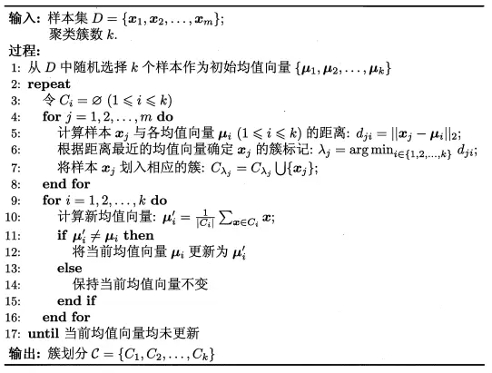
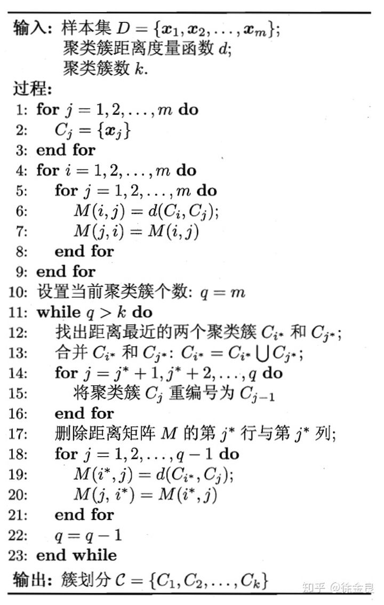

什么是聚类
k-means算法
主要思想
在给定k值和k个初始类簇中心点的情况下，把每个点分配到离其最近的类簇中心点所代表的类簇中。所有点分配完毕之后，根据一个类簇内的所有点重新计算该类簇的中心点(取平均值)，然后再迭代的进行分配点和更新类簇中心点的步骤，直至类簇中心点的变化很小，或者达到指定的迭代次数。
基本原理
假定给定数据样本X，包含了n个对象X={x1,x2,x3,...,xn}，其中每个对象xi都是具有p个维度属性的数据(向量)。Kmeans算法的目标是将n个对象依据对象间的相似性聚集到指定的k个类簇中，每个对象属于且仅属于一个其到类簇中心距离最小的类簇中。首先需要初始化k个聚类中心：
{μ1,μ2,...,μk}(1<k≤n)
然后通过计算第i个对象到第j个聚类中心的欧式距离：
dis(xi,μj)=∣∣xi−μj∣∣=τ=1∑p(Xiτ−μjτ)2
从而得到xi应当归类的类簇标记λi：
λi:=argjmindis(xi,μj)
根据标记1≤λi≤k将xi划分到{C1,C2,...,Sk}中的Cλi中。
依次比较每一个点到每一个聚类中心的距离，从而分配对象后，完成一次迭代。
接下来根据每个类簇Ci中被划分的点重新更新聚类中心μi：
μi←∣Ci∣∑x∈Cix
式中，∣Ci∣为属于类簇Ci的对象个数。
于是可以总结得到K−means算法的伪代码如下：

分析得到：
时间复杂度O(tknp)，t为迭代次数
空间复杂度O(p(n+k)).
函数调用
Python
1
2
3
4
5
6
7
8
9
10
11
12
|
from sklearn.cluster import KMeans
estimator = KMeans(n_clusters=3)
estimator.fit(X)
label_pred = estimator.labels_
label_pred = estimator.labels_
centroids = estimator.cluster_centers_
inertia = estimator.inertia_
|
Matlab
1
2
3
4
5
| Idx = Kmeans(X,K)
[Idx,C] = Kmeans(X,K)
[Idx,C,sumD] = Kmeans(X,K)
[Idx,C,sumD,D] = Kmeans(X,K)
[…] = Kmeans(…,’Param1’,Val1,’Param2’,Val2,…)
|
详见官方文档：Kmenas函数
层次聚类
层次聚类(Hierarchical Clustering)是通过计算不同类别数据点间的相似度来创建一棵有层次的嵌套聚类树从而实现聚类目标的算法。在聚类树中，不同类别的原始数据点是树的最低层，树的顶层是一个聚类的根节点。
层次聚类算法相比划分聚类算法的优点之一是可以在不同的尺度上（层次）展示数据集的聚类情况，这来源于其算法思想。该算法对数据集的划分可分为自底向上和自顶向下的两种分拆策略。
AGNES
AGNES是一种采用自底向上聚合策略的层次聚类算法。它先将数据集X={x1,x2,x3,...,xn}中的每个对象看作一个初始聚类簇，即Ci={xi},i=1,2,...,n，然后在算法的每一步中找出距离最近的两个聚类簇Ci和Cj，将其进行合并。不断重复，直至达到预设的聚类簇个数k。
其中在合并时选择的用于度量的 距离 有如下选择：
dmin(Ci,Cj)=a∈Ci,b∈Cjmindist(a,b)dmax(Ci,Cj)=a∈Ci,b∈Cjmaxdist(a,b)davg(Ci,Cj)=∣Ci∣∣Cj∣∑a∈Ci∑b∈Cjdist(a,b)
选择不同的度量距离，对应着不同的聚类结果，对此有着如下的定义：
Single Linkage：取dmin计算。
这种方法容易受到极端值的影响。两个很相似的组合数据点可能由于其中的某个极端的数据点距离较近而组合在一起。
Complete Linkage：取dmax计算。
Complete Linkage的问题也与Single Linkage相反，两个不相似的组合数据点可能由于其中的极端值距离较远而无法组合在一起。
Average Linkage：取davg计算。
这种方法计算量比较大，但结果比前两种方法更合理。
AGNES算法伪代码如下：

DIANA
DIANA是一种采用自顶向下分裂策略的层次聚类算法。
函数调用
Python
1
2
3
4
5
6
7
| from sklearn.cluster import AgglomerativeClustering
estimator = AgglomerativeClustering(n_clusters=2, affinity=’euclidean’, memory=None, connectivity=None, compute_full_tree=’auto’, linkage=’ward’, pooling_func=’deprecated’)
estimator.fit(X)
|
主要参数
n_clusters：聚类的个数，即k
affinity：计算距离的方法
- “
euclidean”（即 “l2”，欧氏距离） - “
manhattan”（即 “l1”，曼哈顿距离，有利于稀疏特征或稀疏噪声，例如文本挖掘中使用稀有词的出现作为特征时，会出现许多 0） - “
cosine”（余弦距离） - “
precomputed”（预先计算的 affinity matrix） - 如果
linkage = "ward"，只能选择 “euclidean”，选择度量标准的方针是使得不同类样本之间距离最大化，并且最小化同类样本之间的距离
memory： None, str or object with the joblib
如果给定一个地址，可以将层次聚类的树形图缓存到相应地址
linkage：指定层次聚类判断相似度的方法，有以下三种：
ward：组间距离等于两类对象之间的最小距离。（即single-linkage聚类）
average：组间距离等于两组对象之间的平均距离。（average-linkage聚类）
complete：组间距离等于两组对象之间的最大距离。（complete-linkage聚类）
主要属性
labels_： 每个数据的分类标签n_leaves_：分层树的叶节点数量n_components：连接图中连通分量的估计值children：一个数组，给出了每个非节点数量
Matlab
1
2
3
4
5
6
7
8
9
10
11
12
13
14
15
16
17
18
19
20
21
| X = randn(6,2);
distX = pdist(X);
squareform(distX)
tree = linkage(distX);
dendrogram(tree)
ans = cluster(tree,k)
ans = clusterdata(X,k)
|
参考
- Kmeans聚类算法详解|CSDN
- MATLAB K-means聚类的介绍与使用|CSDN
- scikit-learn中的KMeans聚类实现
- 聚类算法(原型、密度、层次聚类)|知乎
- Matlab聚类分析_层次聚类|CSDN